aura.
scent, beneath the surface
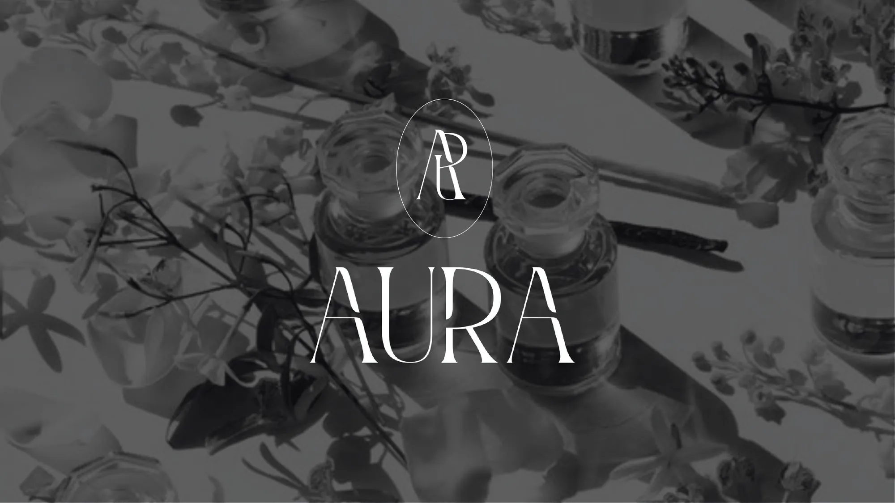
A fragrance brand built on the idea that people, like scents, are layered.
Aura is a self-initiated fragrance and candle brand that I developed end to end, from naming and identity to packaging, a flagship retail concept and a launch strategy. The concept stems from the proverb “don’t judge a book by its cover” and the parallel between how a fragrance unfolds and how people reveal themselves over time.
concept
Top, heart and base notes as a metaphor for identity.
A fragrance is built in three stages: top notes that make the first impression, heart notes that emerge over time, and base notes that linger longest. Aura frames these as a reflection of personality: what we present, what we hold closer, and what defines us at our core.
Flowers form the second layer of the narrative. Often associated purely with beauty and joy, many also carry deeper and more complex meanings, allowing the brand to express both light and shadow.
Designed for discerning, expressive consumers.
The target audience is adults who view fragrance as a form of self-expression and value an experience over a product. Two personas informed the work: Omkar, a software engineer who approaches perfume as an art form, and Ishita, an architect concerned with disposable, unsustainable packaging.
The flagship store is positioned in Hauz Khas Village, New Delhi, close to Kannauj, India’s perfume capital. Raw materials would be sourced regionally: rose attar from Kannauj, jasmine from Madurai and vetiver from Kochi.
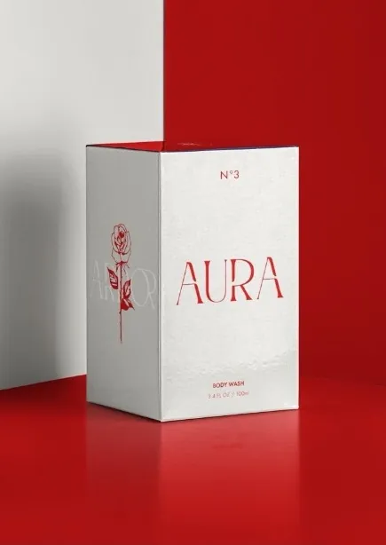
Each scent is paired with a line-drawn flower on the side panel of its box.
progress
One identity, four scent families.
The AURA wordmark is set in a tall, high-contrast display face for an elegant yet distinctive presence, supported by Futura for secondary typography. The A and R combine into a monogram used across lids and closures.
Rather than a single brand colour, I developed a colour-coded system for the four scent families: red for bold, blue for intense, orange for delicate and yellow for floral. Each family is named (Ardor, True Blue, Faith and Glow) and paired with its own floral illustration.
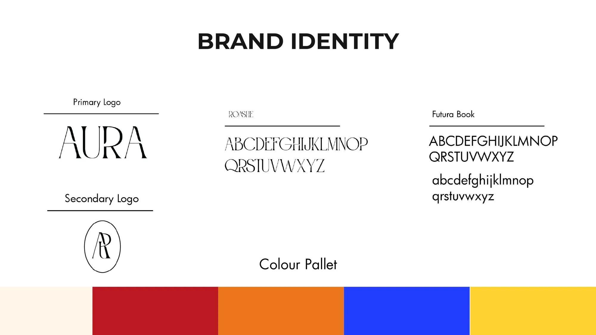
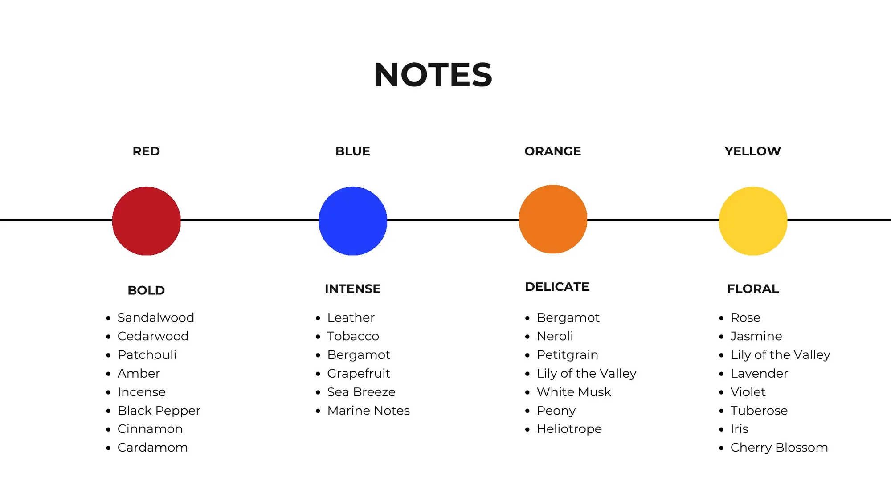
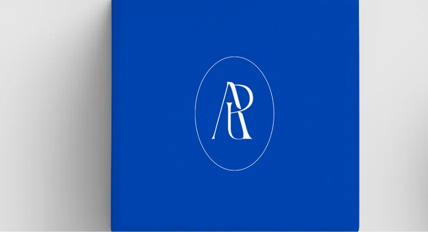
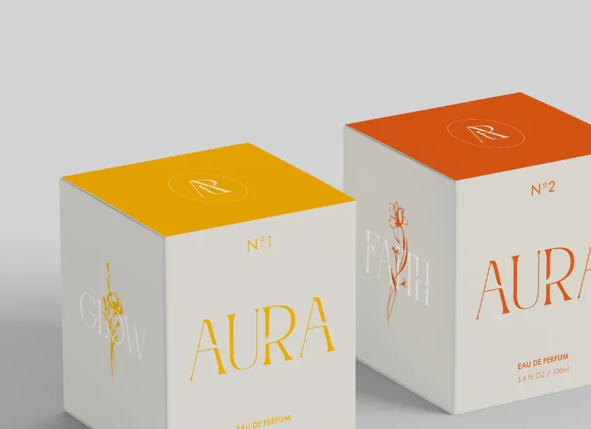
Top: the logo, typefaces and colour palette; the four scent families and their notes. Bottom: the AR monogram on the lid; Glow (N°1) and Faith (N°2) boxes with their flowers.
A retail experience led by mood.
The store is designed as an experience rather than a shelf of products. Visitors select one of four colour-coded scent strips according to their mood, then work with an in-house perfumer to blend a personalised fragrance from a menu of raw materials.
Menu cards follow the same colour system, listing the top, heart and base notes of each family. The launch strategy comprises a month-long social media teaser, influencer PR kits with a mini apothecary set, a launch event and the store opening.
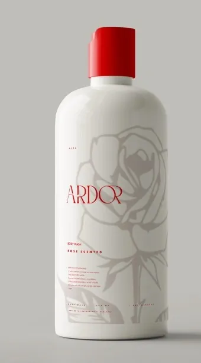
Ardor shower gel, rose scented.
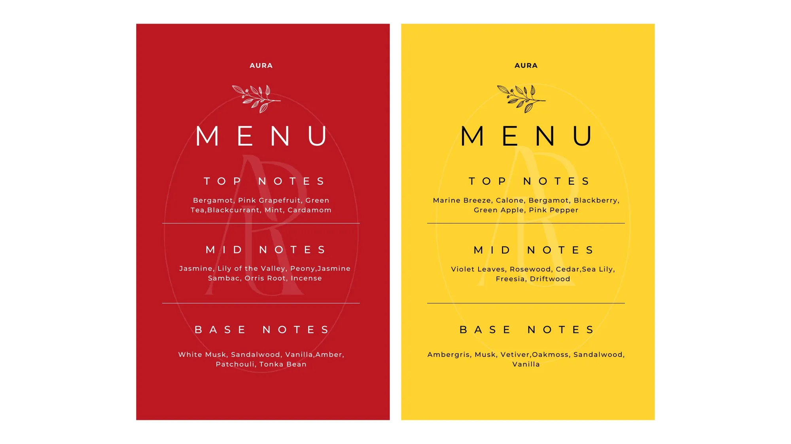
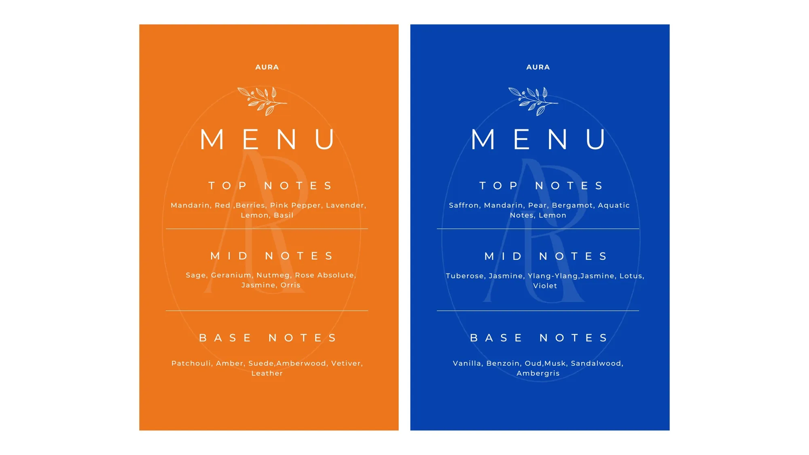
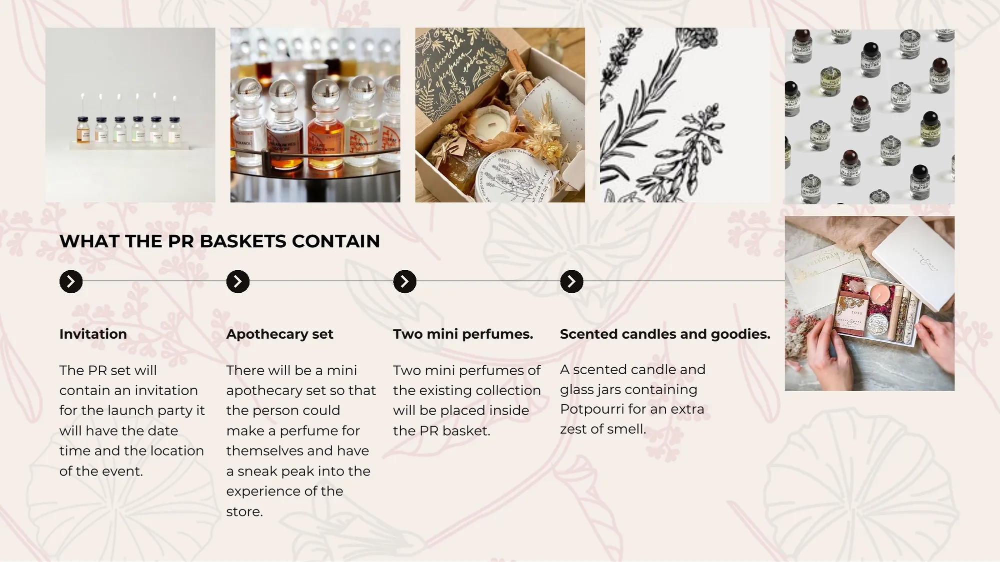
Menu cards for each scent family, and the contents of the launch PR kit.
outcome
A cohesive product range.
The final collection spans perfume, scented candles, body butter and shower gel. Each product shares a warm off-white base, the AURA wordmark and a numbered system, with the scent colour applied to lids, caps and labels.
This approach makes each scent instantly identifiable while keeping the range visually consistent as a family.
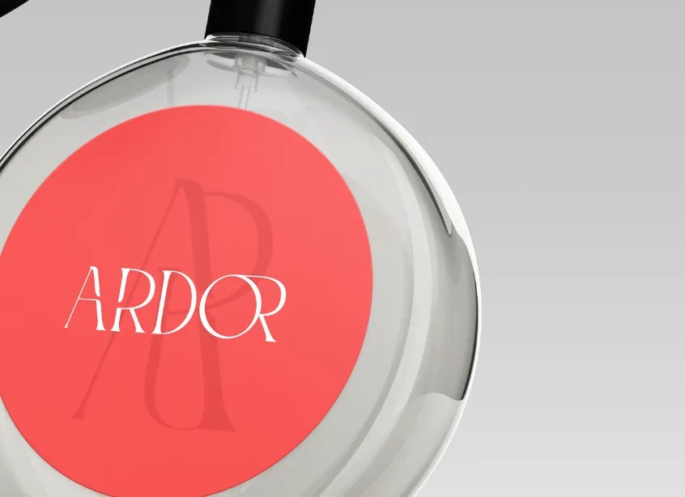
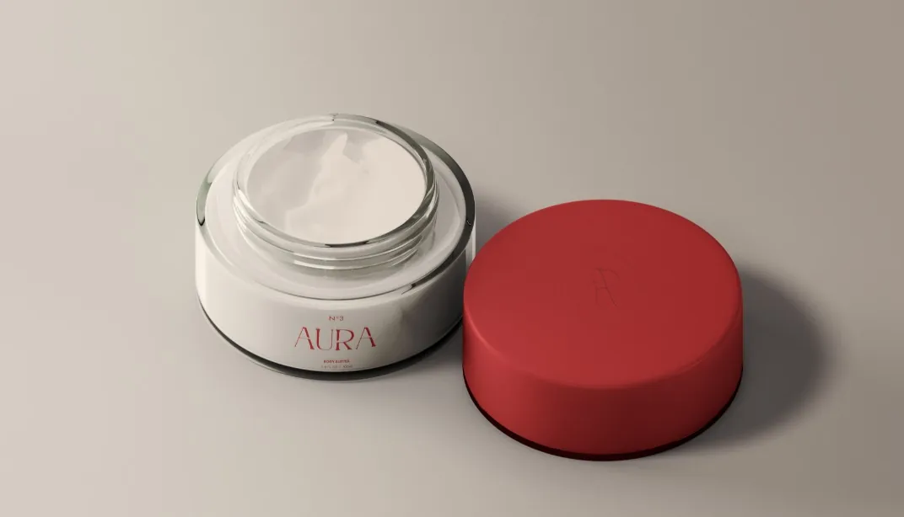
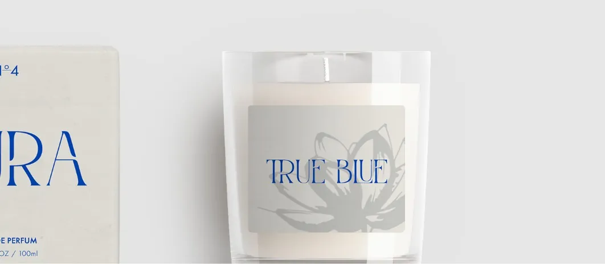
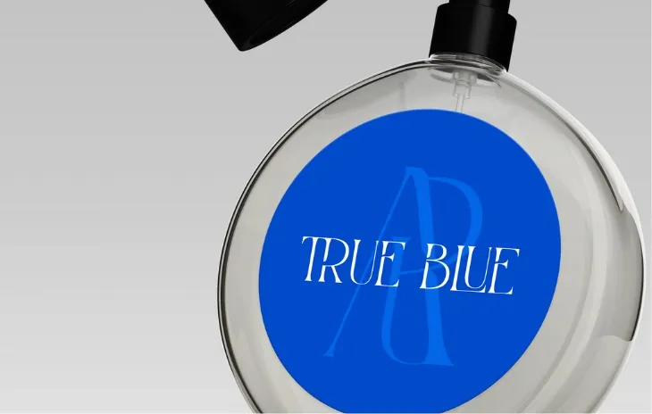
Restraint on the outside, colour within.
The perfume packaging is intentionally understated: textured grey card carrying only the wordmark and a number. The scent colour appears on the lid and edges, offering a subtle cue to what is inside.
In this way, the packaging returns to the brand’s founding idea: its true character is revealed only once it is opened.
outcome
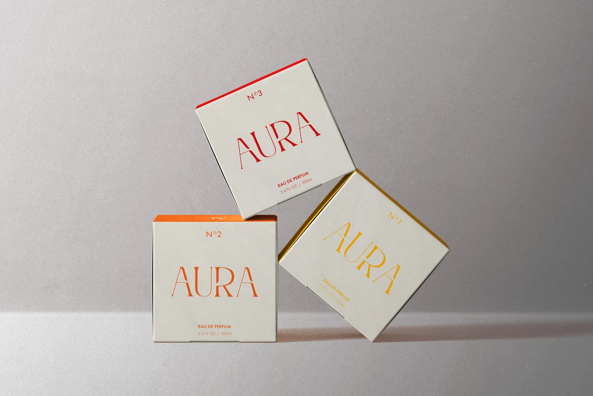